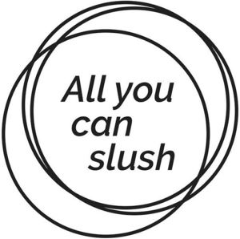

Trade Mark Journal No.2025/013 28 March 2025
WO0000001845023 (11,35)
Office of origin: Italy
Date of International Registration:8 October 2024
Date of designation in the UK:
8 October 2024

The trademark consists of an imprint depicting the wording ALL YOU CAN SLUSH in fancy characters, the portions ALL YOU, CAN, SLUSH placed one above the other and slightly indented, all arranged in a circular figure that partially intersects with two other circular figures.
International priority date claimed: 27 May 2024
(Italy)
(302024000085564)
- Class 11
- Drinks cooler; granita makers; ice cream makers; apparatus for making ices and ice cream, electric; beverage cooling apparatus; temperature-controlled food and beverage dispensing units, other than vending machines; refrigerated units for dispensing beverages; dispensing units for refrigerated beverages; ice machines and apparatus; apparatus for dispensing ice; ice storage apparatus; refrigerators; refrigerating installations; cooling installations and machines; refrigerating appliances and installations; refrigerating apparatus and machines; cooling installations for liquids; ice-cream making machines; ice-cream makers, electric; electric ice-cream freezers.
- Class 35
- Retail or wholesale services, also on-line, of granita makers, ice cream makers, electric apparatus for making ices and ice cream, beverage cooling apparatus, temperature-controlled food and beverage dispensing units, other than vending machines, refrigerated units for dispensing beverages, dispensing units for refrigerated beverages; retail or wholesale services, also on-line, of ice machines and apparatus, apparatus for dispensing ice, refrigerating appliances and installations; retail or wholesale services, also on-line, of refrigerating apparatus and machines, cooling installations for liquids, ice-cream making machines, electric ice-cream makers, electric ice-cream freezers; organization of exhibitions, fairs and shows for commercial, promotional and advertising purposes; organization of meetings and events for advertising purposes; organization of trade fairs; distribution of samples; distribution of advertising materials [leaflets, prospectuses, printed material, samples]; customer relationship management; advertising; business management, organization and administration; office functions.
ELMECO S.R.L.
Representative: Dr. Modiano & Associati SpA, Via Meravigli, 16, I-20123 Milano, ITALY